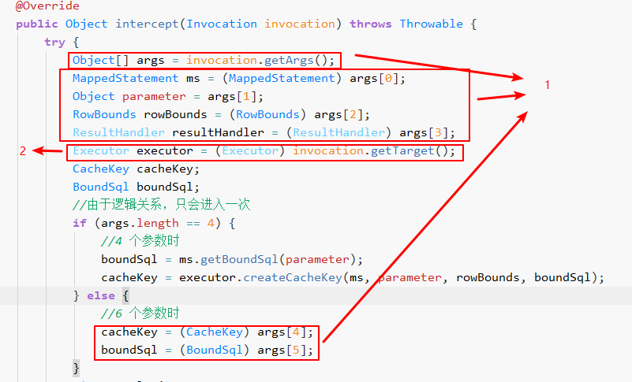
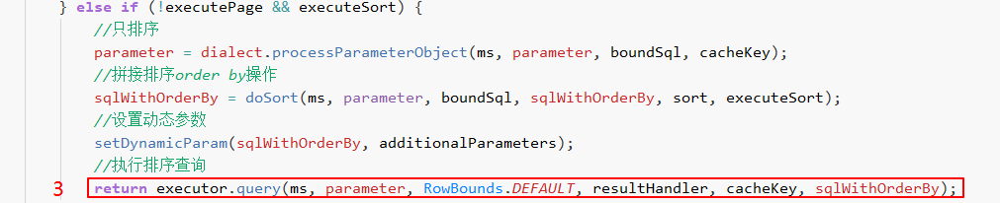
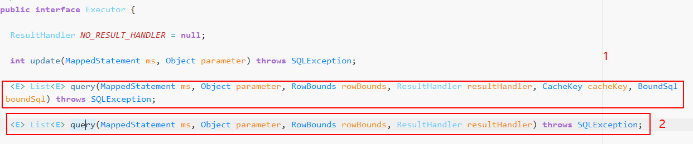

MyBatis拦截器--从基础到与Spring Boot整合
MyBatis拦截器–从基础到与Spring Boot整合
前言
MyBatis拦截器是Java持久层框架，最近在研究拦截器的写法。本以为会很复杂，实际上从使用上来说，是很简单的。
本文主要介绍的时各个方法和注解的含义及使用方式，并且与springboot进行简单的整合。
话不多说，开始说明。
关于拦截器
Mybatis拦截器的写法很简单，需要继承Interceptor类，重写其中的intercept()、plugin()、setProperties()。
package org.apache.ibatis.plugin; |
具体如下：
|
这是先说方法，再说注解
方法
-
setProperties()方法主要是用来从配置中获取属性。如果是使用xml式配置拦截器，可在Mybatis配置文件中添加节点，属性可以以如下方式传递
<plugins>
<plugin interceptor="tk.mybatis.simple.plugin.XXXInterceptor">
<property name="propl" value="valuel" />
<property name="prop2" value="value2" />
</plugin>
</plugins>如果在
Spring boot中使用，则需要单独写一个配置类，如下：
public class MybatisMapperAutoConfiguration{
public void zipkinInterceptor(SqlSessionFactory sqlSessionFactory) {
ZipkinInterceptor zipkinInterceptor = new ZipkinInterceptor();
Properties properties = new Properties();
properties.setProperty("prop1","value1");
zipkinInterceptor.setProperties(properties);
sqlSessionFactory.getConfiguration().addInterceptor(zipkinInterceptor);
}
}如果说不需要配置属性，则在
spring boot中，不需要去编写配置类，只需要像我一样在拦截器上加个@Component即可。 -
plugin()方法用于指定哪些方法可以被此拦截器拦截。如下：
public Object plugin(Object target) {
if (target instanceof Executor) {
//表明只有Executor方法才会执行这个拦截器内的intercept()
return Plugin.wrap(target, this);
}
return target;
}Plugin.wrap()是个包装方法，如果需要此拦截器，则将此此拦截器连同入参中的target一起包装后返回，如果不需要则直接返回target另附具体
Plugin.wrap()的源码：public static Object wrap(Object target, Interceptor interceptor) {
Map<Class<?>, Set<Method>> signatureMap = getSignatureMap(interceptor);
Class<?> type = target.getClass();
Class<?>[] interfaces = getAllInterfaces(type, signatureMap);
if (interfaces.length > 0) {
return Proxy.newProxyInstance(
type.getClassLoader(),
interfaces,
new Plugin(target, interceptor, signatureMap));
}
return target;
} -
intercept()方法是用来对拦截的sql进行具体的操作。这里拿分页插件
PageHelper中的类PageInterceptor进行说明。坐标：
com.github.pagehelper.PageInterceptor#intercept(Invocation)
-
invocation.getArgs()是从入参invocation获取拦截器所拦截方法的参数，其参数顺序和被拦截的方法保持一致，这个参数的个数以及参数具体是什么我们下一步说到@Signature注解时会讲。 -
获取执行器，可以用
Executor直接执行被我们修改过的sql，示例如下
这里就是不继续执行原来的方法体中的内容，而是去执行我们修改后的sql并且返回。
-
关于返回值
除了以上这种直接去执行我们修改过sql的方式，如果我们想让方法继续执行下去也是可以的。
只需要返回：
return invocation.proceed();
-
注解
MyBatis拦截器用到了两个注解：@Intercepts和@Signature
-
@Intercepts
public Intercepts {
Signature[] value();
}可以看到，其中是一个
Signature类型的数组，意味着一个拦截器可以拦截多种方法。 -
@SignatureSignature意为签名，署名。实际上作用也与语义相同：表明需要拦截方法的方法签名。
public Signature {
Class<?> type();
String method();
Class<?>[] args();
}有三个参数，
type：类型method：方法名称args：方法参数
这三个参数可以确定一个方法。默认情况下，
MyBatis允许使用插件（拦截器）来拦截的接口和包括以下几个。- Executor ( update 、 query 、 flushStatements 、 commit 、 rollback 、 get Transaction、 close、 isClosed)
- ParameterHandler ( getParameterObj ect、setParameters)
- ResultSetHandler ( handleResul tSets 、 handleCursorResultSets 、 handleOutputParameters)
- StatementHandler (prepare、 parameterize、 batch、 update、 query)
实际上，我们只需要记住这几个接口名称就可以，其余我们可以根据实际需要去看源码来确定具体所需要拦截的类。
- 以
Executor的query方法举例说明@Signature是如何确定一个方法。

如果我们需要拦截第一个方法，只需要这么写
@Signature可以注意看，
type的值与类名相同，method与方法名相同，为了避免方法重载，args中指定了各个参数的类型和个数。-
如果我们想拦截多个方法，比如说上图1和2的方法我们都想拦截到，只需要再加个
@Signature就可以，要记得@Intercepts的value可是数组啊 -
@Intercepts( { @Signature(type = Executor.class, method = "query", args = {MappedStatement.class, Object.class, RowBounds.class, ResultHandler.class}), @Signature(type = Executor.class, method = "query", args = {MappedStatement.class, Object.class, RowBounds.class, ResultHandler.class, CacheKey.class, BoundSql.class}), } ) <!--code10-->
-
在拦截器上加
@Component注解
public class UserAuthorityDataInterceptor implements Interceptor
后记
在mybatis的xml文件中，使用的是ognl语法，然而在mybatis中new的变量，因类加载器不同，会导致equals或==永远是false，需要注意。
资料参考
《MyBatis从入门到精通》——刘增辉（PageHelper作者）